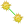

To change what is displayed on the status bar, click from the BlueZone menu bar and click the Statusbar tab.
Field Styles: Determines the border type of the different sections of the status bar. Select one of the following options from the menu:
No Borders
Full Static Edge
Single White Line
Two Line Notch
Possible status values are:
Possible values of the Status Indicators are:

displays.